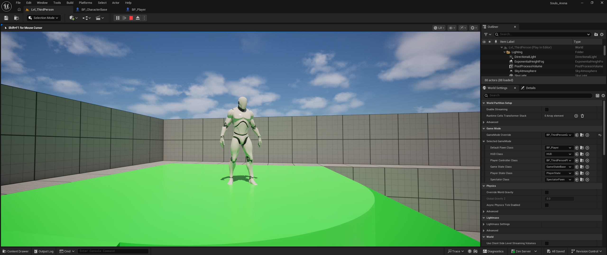

Week 1 — Player Movement

In Week 1, I developed the core player movement system, including jumping and directional movement. I also created the foundation for an enemy AI system, although it is not yet functional.
Week 2 — Free-Flow Combat System

In Week 2, I began implementing a free-flow combat system inspired by the Batman Arkham series. The player can move dynamically between enemies based on directional input using the mouse and keyboard.
Week 3/4 — Camera & Combat Animations
In Week 3, I introduced a dynamic camera system that adapts based on the number of enemies in the area. In Week 4, I expanded combat by adding attack and hit animations with directional reactions based on where enemies are struck.
Week 5/6 — Motion Warping Combat
In Weeks 5 and 6, I implemented motion warping using Unreal Engine 5. This allows animations to dynamically adjust in real time so actions like attacks connect accurately with targets, even when positioning isn’t perfect.